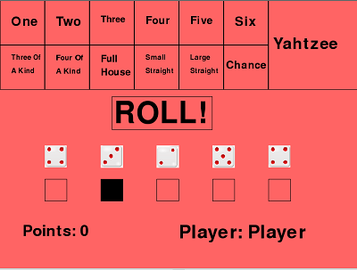

Of course the only thing that can be here is my game!
This is a recreation of Yahtzee, published on trinket.io, and coded with PyGame!
- The main difference between this and normal yahtzee is the inclusion of two extra modes besides the base game:
- Competitive mode, in which after each player is done with their turn, they get to block the next player from scoring on a chosen tile for their turn.
- Super Competitive mode, which plays like the opposite of Competitive mode. Instead of blocking a tile for the next player, you force the next player to roll for that tile.
There are differences between almost all forms of yahtzee, so check out my guide!